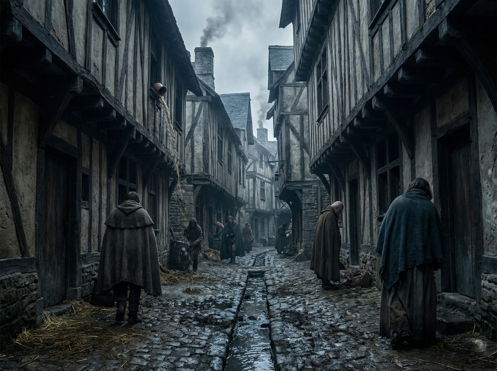
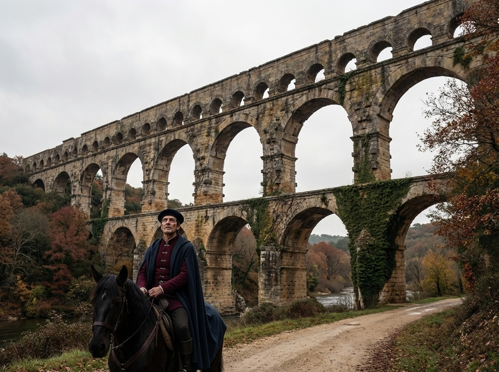
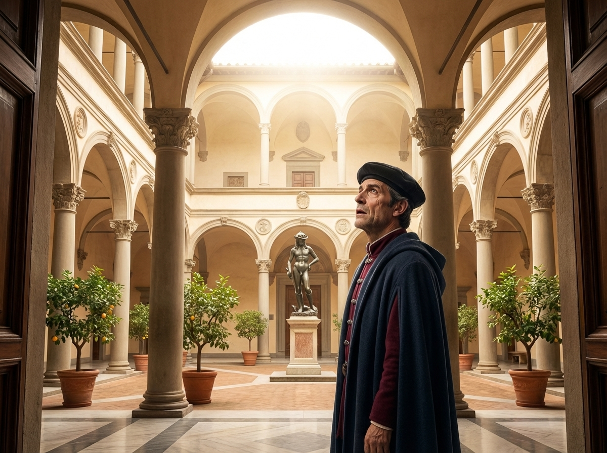
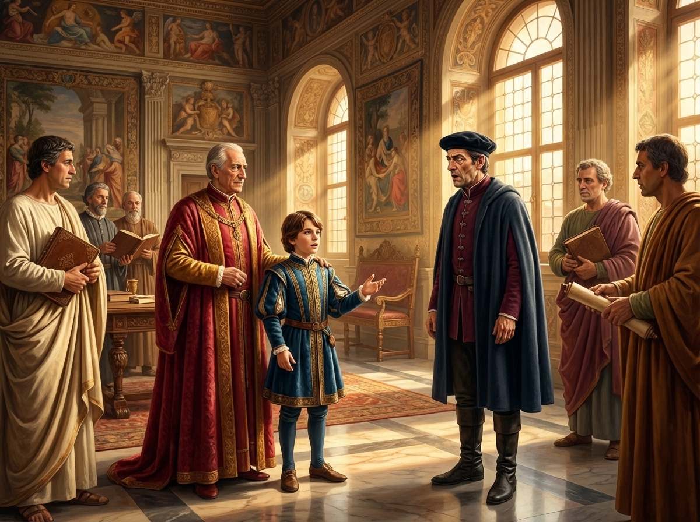
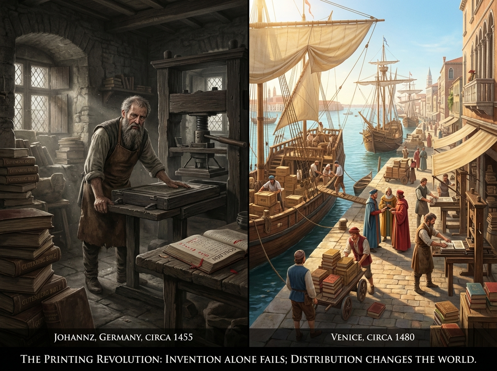

The Shock of Florence
What the Renaissance Looked Like to the People Who Lived Through It
France & Florence · 1460

What the Renaissance Looked Like to the People Who Lived Through It
France & Florence · 1460

This story takes place more than five hundred years ago, in a time before electricity, before cars, before anyone knew the Americas existed. Europe was a patchwork of kingdoms, and most people never traveled more than a few miles from the place they were born.
In the year 1460, a French nobleman named Jean de Reilhac mounted his horse and rode south. The King of France was sending him to Rome — a new pope had just been elected, and France needed an ambassador there. His route took him through Italy, the boot-shaped country across the Alps, with a brief stop along the way in a city called Florence.
Jean knew almost nothing about Florence, and what little he knew did not impress him. It had no king, no castle, no knights. It was run by bankers and wool merchants — no proper nobility, no royal blood. Just money. A pit stop on the way to Rome, nothing more.
He left behind the only world he knew: a world of mud and stone, cold drafts and smoky fires. The streets of Paris were so narrow that two carts could barely pass. Slaughterhouses threw blood into open gutters on market days. The stench of the city could be detected from miles away.
This was normal. This was how cities were — everywhere Jean had ever been.
Jean grew up in a château with walls ten feet thick. Not for beauty — for survival. Enemies, weather, plague. The windows had no glass, only wooden shutters. You could have light or warmth, but not both.
The great hall smelled of woodsmoke and wet stone. Tapestries hung on every wall — not for decoration, but to block the drafts that cut through the gaps in the stonework. The floor was bare stone covered with straw.
Jean owned seven books. This made him one of the most literate noblemen in France. He had a Book of Hours for his prayers, two chivalric romances, and a chronicle of the kings. He could read French and enough Latin to follow Mass.
He had heard the word "Greek." He had never seen a word of it written down.
The largest library in France — the King's own collection in the Louvre — held about 900 manuscripts. A typical nobleman might own fewer than ten books in his lifetime.

On the road south, Jean passed through Provence, where enormous Roman ruins still stood: a vast amphitheater at Arles, an aqueduct at the Pont du Gard that soared across a river valley on three tiers of perfect arches.
Nobody knew how they had been built. Local legend said the devil made the aqueduct — no human hand could have laid stones so precisely, so high. The amphitheater at Arles had been turned into a small fortified town: two hundred houses built inside its arches, defensive towers on the rim, two chapels in the arena.
To Jean, these ruins were like Stonehenge is to us — astonishing, incomprehensible remnants of a lost civilization. The people who built them were gone. Their knowledge was gone.
The world had moved on to smaller things. Or so he thought.
After weeks on the road, Jean crossed the Alps into Italy. The air grew warmer. Olive trees and grapevines replaced the gray forests of France. Florence was just the next stop on a long ride to Rome — a place to rest, change horses, and move on.
Then he saw a shape on the skyline that made no sense.
Brunelleschi's dome. A man named Filippo Brunelleschi had designed and built an enormous dome on top of Florence's cathedral. One hundred and fifty feet across. Three hundred and eighty feet high. Larger than any building in Europe — larger than anything built since the fall of Rome, a thousand years earlier.
Jean knew Gothic cathedrals. He had prayed in Notre-Dame, where pointed arches and flying buttresses reached heavenward like fingers. But those buildings were tall and narrow. This was something else: a vast curve, like the sky itself made solid. No buttresses. No visible means of support.
And it was not a ruin. Someone had built it twenty years ago.
Brunelleschi built the dome without scaffolding — inventing a herringbone brick pattern that made each ring of bricks hold up the next. It remains the largest masonry dome ever constructed.

Jean was received at the Palazzo Medici. The instant he stepped through the entrance, everything changed.
White light poured through an open courtyard ringed with columns — Corinthian columns, like the ones in Roman ruins. But these were new, clean, perfectly proportioned. The space felt more like outdoors than the outdoors did.
Then it hit him. He had seen this before. It looked like the Roman ruins in Provence — except someone had figured out how to build them again.
In the courtyard stood a bronze statue of a young man — life-sized, freestanding, nude. Jean had never seen anything like it. In France, statues were saints carved into cathedral walls. This figure looked like it might step off its pedestal and speak.
Donatello's bronze David (1440s) was the first freestanding nude statue made since ancient times. In northern Europe, freestanding sculpture simply did not exist.

Inside, men wore robes that looked like ancient Roman dress. Two scholars were deep in conversation — but in a language Jean had never heard before. It wasn't Latin. It wasn't Italian. It was something older, stranger.
"What language is that?" Jean asked.
"Greek," his host replied. "Ancient Greek."
Jean stared. Back in France, ancient Greek was considered a dead language — lost with the fall of Rome, like so much else. No one he knew could read it, let alone speak it.
"We have lots of ancient Greek here," his host said, as if it were nothing unusual.
Then Cosimo de' Medici — the head of the Medici family, the richest bankers in all of Europe — said: "Here is my grandson, Lorenzo. He is ten years old. He has just written a poem in ancient Greek about the three parts of the soul. Would you like to hear him recite it?"
Jean stood in a room full of light, listening to a child speak a language that had been dead for a thousand years, in a building that looked like ancient Rome brought back to life.
"Where am I? None of this is possible. None of this has existed for a thousand years."
Cosimo led Jean to his private library. Jean owned seven books. This room held hundreds.
But it was not just the number. It was what they were. Plato. Aristotle. Virgil. Cicero. Histories, poetry, natural philosophy, mathematics — many in original Greek, a language Jean could not read and had assumed was extinct.
These books were not chained to desks, as they were in the University of Paris. They were passed from hand to hand, argued over at dinner, copied and shared.
Jean began to understand. Florence had no army. No noble bloodline. No ancient claim to power. But it had something no kingdom in Europe could match: knowledge recovered from the ancient world, and people who knew what to do with it.
Florence had discovered something extraordinary: you could use culture the way other cities used soldiers.
The art, the architecture, the scholarship — it was not decoration. It was strategy. Attacking Florence would be like burning the Library of Alexandria. No ruler wanted to be known as the barbarian who destroyed the most beautiful city in the world.
During World War II, five hundred years later, Allied bombers were still ordered to avoid Florence's treasures. The strategy still worked.
And inside the city, the government was unlike anything in Europe. Florence had no king. Nine citizens were randomly selected from the merchant guilds and locked in a tower together for two-to-three-month terms. They had to reach unanimous agreement on every decision. The system was designed to be tyrant-proof — and it worked so well that even the Medici, the richest family in Europe, could never fully take over.
When Renaissance Florence celebrated government by the popolo ("the people"), it didn't mean everyone. It meant the top 5% — wealthy merchant elites. Later generations projected modern democratic ideals onto a system that was nothing of the sort.

The Renaissance almost didn't spread.
In 1450, a German goldsmith named Johannes Gutenberg built a printing press and produced three hundred Bibles. But he was stuck in a small, landlocked town where almost nobody could read. He sold about seven copies. He went bankrupt. The bank that seized his press tried to run the business themselves — and also went bankrupt.
The printing press only changed the world when it reached Venice, where ship captains could carry books to every port in the Mediterranean. The lesson: a great invention means nothing without a way to spread it.
And paper mattered just as much as the press. Before affordable paper, people reread the same few books their entire lives. The gradual cheapening of paper was as transformative as printing itself — because for the first time, there were enough writing surfaces to support an explosion of knowledge.
The strangest thing about the Renaissance is how sideways its effects were.
Over a hundred years before Jean's visit, an Italian poet named Petrarch survived the Black Death in 1348 — a terrible plague that killed one in every three people in Europe. He looked at the devastation around him and made a plan: if he could get powerful leaders to read the books of ancient Rome, he believed they would become wise and virtuous rulers — like the great Romans he admired.
Two hundred years later, his project had succeeded — but not how he imagined. Instead of philosopher-kings, it produced figures like Cesare Borgia, who used their classical education for conquest and manipulation.
But here is the twist. Among the ancient books that Petrarch and his followers recovered was a text by Lucretius, a Roman writer who believed that everything in the universe was made of tiny invisible particles called atoms. Medical students in the 1500s read Lucretius and began asking: what if diseases are caused by tiny particles too? That question, centuries later, led to germ theory and modern medicine.
Petrarch tried to create virtuous rulers. He accidentally helped cure the plague that destroyed his world.
The Renaissance was not a golden age. It was messy, fragile, and often cruel. But it was the moment when people began to believe that human intelligence could shape the world — not just endure it.
And it all started with a dome on a skyline, a boy reciting Greek, and an ambassador who couldn't believe his eyes.
Five questions about what you just read.
The Renaissance was not a golden age. It was messy, fragile, and often cruel. But it was the moment when people began to believe that human intelligence could shape the world — not just endure it.— Ada Palmer, Inventing the Renaissance
Based on insights from the Dwarkesh Podcast interview with
Ada Palmer, University of Chicago · March 2026